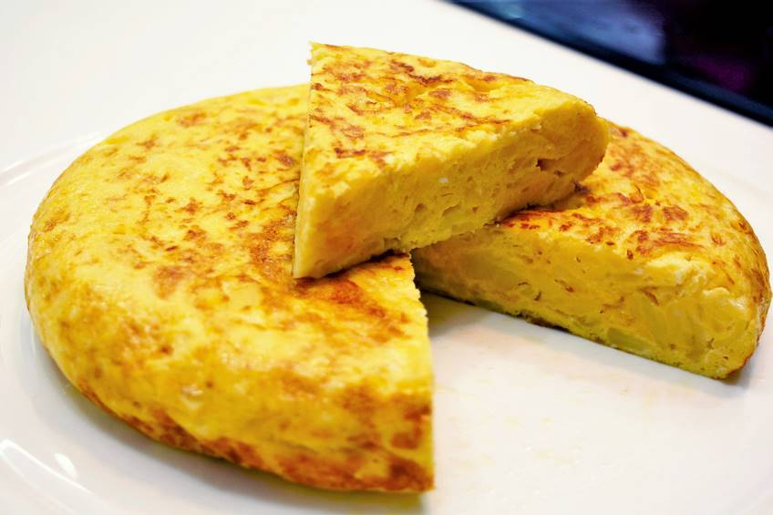

Tortilla de patata
Tortilla de patata

Description
One of the classics from the spanish cousine, tortilla is actually quite easy to make. There are many variations, and discussions can be very heated about which one is the best: with or without onion? runny or well-made? Why don't you try them all and choose your own??
Ingredients
- Potatoes (around 1.5kg)
- Onion (half of a big one)
- 6 large eggs
- Salt
- Plenty of olive oil
Steps
- Start by peeling and chopping into thin wedges all the potatoes, wash them and drain them to remove the extra moisture
- Chop the onion finely and add it to the pan with plenty of hot oil, keep stiring until transparent. Add salt
- Add the potatoes and fry them with hot oil but careful as to not burn them. You want them to become tender but not golden, so keep stiring them while cooking, but don't break them too much, otherwise you'll end up with a puree!
- Set the potatoes and onion aside and drain the excess of oil. On a separate bowl, whisk all the eggs with a bit of salt. You want the potatoes to be relatively cool as to not cook the eggs prematurely, and not oily
- On a medium/small pan, add a tablespoon of oil, and when it is hot, pour your egg and potato mix. Cook well for about 4-5 minutes at medium heat, being careful that your mix does not stick to the pan
- This is the trickiest step of them, and the moment when everything can go wrong. Using a plate or a flat surface larger than the pan, cover the pan and flip it, so that your tortilla is on the plate now. Now, cook the other side for about 3-4 minutes. You need to be fast, so that the contents of the tortilla do not spill. Using a spatula, push the sides towards the middle to give them the characteristic round shape.
- Here is the bit of fine-tunning. You can cook the tortilla a bit less if you want a more runny inside, or if you are grossed out about the raw-ish egg, you can cook it a bit longer. If you want the sides to get a more golden color, you can flip it once again to cook the other side. Keep in mind that the more you cook it, the drier it will get, but you can also accompany it with a salad or with some sauce like mayo or a homemade tomato sauce! An alternative to this dish is to also add some sauce, as a "tortilla stew"!